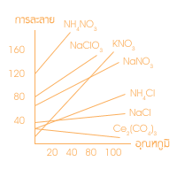

พลังงานในการละลาย
|
|
การละลายน้ำของสารประกอบไอออนิก
จะเกิดขึ้นตามขั้นตอนดังนี้
1. มีการดูดพลังงานเข้าไปเพื่อสลายโครงร่างผลึก
พลังงานนี้เรียกว่า พลังงานโครงร่างผลึก (พลังงานแลตทิซ)
2. เกิดการสร้างพันธะกับน้ำ โดยจะคายพลังงานออกมา
พลังงานนี้เรียกว่า พลังงานไฮเดรชั่น
ท่านสามารถดู animation ประกอบ ทางซ้ายมึอได้ เพื่อให้นึกภาพได้ง่ายขึ้น |
ในกรณีที่สารไอออนิกละลายน้ำได้
พลังงานของการละลายจะเป็นประเภทดูดหรือคายความร้อนขึ้นอยู่กับค่าของพลังงานแลคทิช
และพลังงานไฮเดรชั่น
1.
ถ้าพลังงานแลตทิช มากกว่า พลังงานไฮเดรชั่น การละลายนั้นเป็นประเภทดูดความร้อน
2.
ถ้าพลังงานแลตทิช น้อยกว่า พลังงานไฮเดรชั่น การละลายนั้นเป็นประเภทคายความร้อน
ตัวอย่าง เช่นการละลายของ
NaCl และ KBr
ก. การละลายของ NaCl
NaCl(s) -->
Na+(g)
+ Cl-(g) DH2
= +764.9 kJ / mol
Na+(g) + Cl-(g)
-----H2O-----> Na+(aq)
+ Cl-(aq) DH2
= -769.1 kJ / mol
NaCl(s) -----H2O----->Na+(aq)
+ Cl-(aq) DH
= DH1
+
DH2
= -4.2 kJ / mol
การละลายของ NaCl(s)
เป็นประเภทคายความร้อน เนื่องจาก DH
เป็นลบ
ข. การละลายของ KBr
KBr(s) --> K+(g) +
Br-(g) DH1
= +664.6 kJ / mol
K+(g) + Br-(g)
-----H2O-----> K+(aq)
+ Br-(aq) DH2
= -656.3 kJ / mol
KBr(s) -----H2O----->
K+(aq) + Br-(aq) DH
= DH1 + DH2 =
+ 8.3 kJ / mol
การละลายของ
KBr เป็นประเภทดูดความร้อน เนื่องจาก DH
เป็นบวก
สรุป การละลายของสารประกอบไอออนิก
1.
สารที่ไม่ละลายน้ำ
มีพลังงานแลตทิช
>> พลังงานไฮเดรชั่น
มีแรงยึดเหนี่ยวระหว่างไอออนบวกกับไอออนลบมากกว่าแรงยึดเหนี่ยวระหว่างไอออนบวกกับน้ำและไอออนลบกับน้ำ
2.
สารที่ละลายน้ำ
มีพลังงานแลตทิชใกล้เคียงกับพลังงานไฮเดรชั่น
มีแรงยึดเหนี่ยวระหว่างไอออนบวกกับไอออนลบ
น้อยกว่าแรงยึดเหนี่ยวระหว่างไอออนบวกกับน้ำและไอออนลบกับน้ำ
3.
การพิจารณาพลังงานของการละลาย สำหรับสารที่ละลายน้ำได้
ถ้าพลังงานแลตทิชมากกว่าพลังงานไฮเดรชั่น
จะเป็นประเภทดูดความร้อน
ถ้าพลังงานแลตทิชน้อยกว่าพลังงานไฮเดรชั่น
จะเป็นประเภทคายความร้อน
เกณฑ์กำหนดการละลายของสาร
การละลายเป็นสมบัติเฉพาะตัวอย่างหนึ่งของสาร
ขึ้นอยู่กับโครงสร้างและส่วนประกอบของสารนั้นความสามารถในการละลาบยจนเป็นสารละลายอิ่มตัวเรียกว่า
สภาพละลายได้ (solubility)
การละลายนอกจากจะขึ้นอยู่กับลักษณะของสารแล้วยังขึ้นอยู่กับชนิดของตัวทำละลายและอุณหภูมิด้วยดังจะเห็นได้จากกราฟที่แสดงผลของอุณหภูมิต่อการละลายจองสารชนิดต่างๆดังต่อไปนี้

จากกราฟจะเห็นได้ว่า
เมื่ออุณหภูมิเปลี่ยนแปลง จะทำให้การละลายของสารต่างๆเปลี่ยนแปลงไปด้วย บางชนิดก็ละลายได้เพิ่มขึ้นเมื่ออุณหภูมิเพิ่มขึ้นเช่น
Ce2(SO4)3
หมายเหตุ
1.
เกลือที่ละลายน้ำแล้วดูดความร้อน เมื่ออุณหภูมิเพิ่มขึ้นการละลายจะเพิ่มขึ้น
เช่นการละลายของ KNO3 เป็นประเภทดูดความร้อน
2.
เกลือที่ละลายน้ำแล้วคายความร้อน เมื่ออุณหภูมิเพิ่มขึ้น การละลายจะลดลง เช่นการละลายของ
Ce2(SO4)3 เป็นประเภทคายความร้อน
นอกจากอิทธิพลของอุณหภูมิ
จะมีผลต่อการละลายแล้ว ตัวทำละลายก็มีอิทธิพลต่อการละลายเช่นเดียวกัน ตัวอย่าง เช่น
-
NaCl ละลายได้ดีมากในน้ำ แต่ไม่ละลายในเบนซิน
-
AgCl ไม่ละลายน้ำ แต่ละลายได้ในอัมโมเนีย เป็นต้น
สารประกอบไอออนิกบางตัวละลายในน้ำได้ดี
แต่บางตัวก็ละลายได้น้อย เช่น
ที่
20 °C NaCl
ละลายได้ 36.0 กรัม ในน้ำ 100 กรัม
AgCl
ละลายได้ 1.5 x 10-4 กรัม ในน้ำ 100 กรัม
CaSO4
ละลายได้ 0.19 กรัม ในน้ำ 100 กรัม
จะเห็นได้ว่า
CaSO4 ละลายได้มากเมื่อเปรียบเทียบกับ AgCl แต่ละลายได้น้อยเมื่อเปรียบเทียบกับ
NaCl ดังนั้นการละลายของสารจึงมักนิยมใช้ในเชิงเปรียบเทียบ การบอกการละลายของสารที่สมบูรณ์จะต้องอ้างถึงอุณหภูมิและปริมาณของตัวทำละลายด้วย
โดยทั่วๆเกณฑ์กำหนดการละลายน้ำของสารอาจจะแบ่งได้เป็น 3 ระดับคือ
1.
พวกที่ไม่ละลายน้ำ ได้แก่พวกที่ละลายน้ำได้น้อยกว่า 0.1 กรัม ในน้ำ 100
กรัม ที่ 25 ° C เช่น AgCl ,BaSO4 , PbSO4
2.
พวกที่ละลายได้บ้าง ได้แก่พวกที่ละลายน้ำได้ 0.1 1.0 กรัม ในน้ำ 100 กรัม
ที่ 25° C เช่น CaSO4 , Ca(OH)2 , Ag2SO4
3.
พวกที่ละลายได้ดี ได้แก่พวกที่ละลายน้ำได้มากกว่า 1.0 กรัม ในน้ำ 100 กรัม
ที่ 25 ° C เช่นNaCl , CuSO4 , KNO3
ตาราง สรุปประเภทสารที่ละลายน้ำได้ และสารที่ไม่ละลายน้ำ